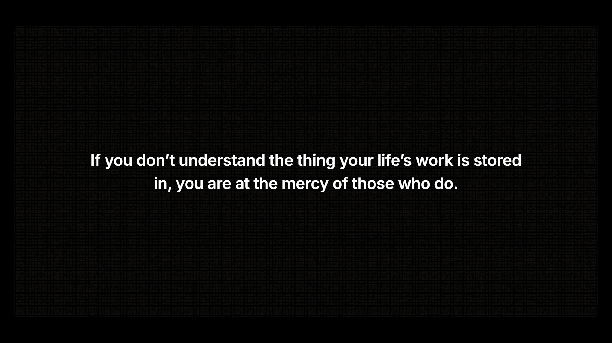
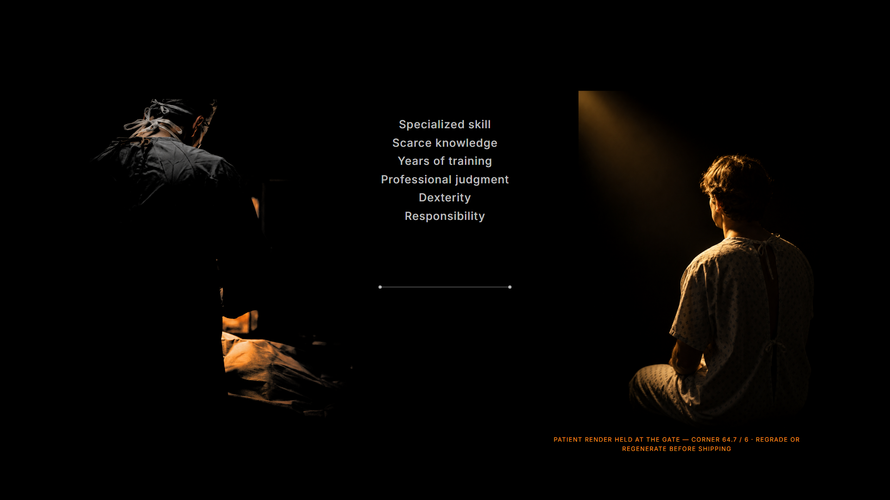
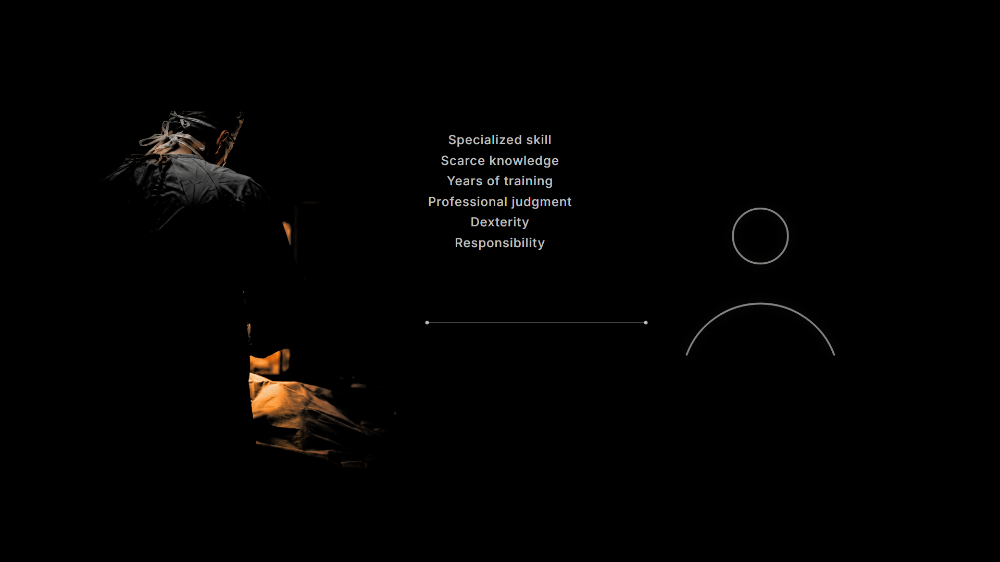
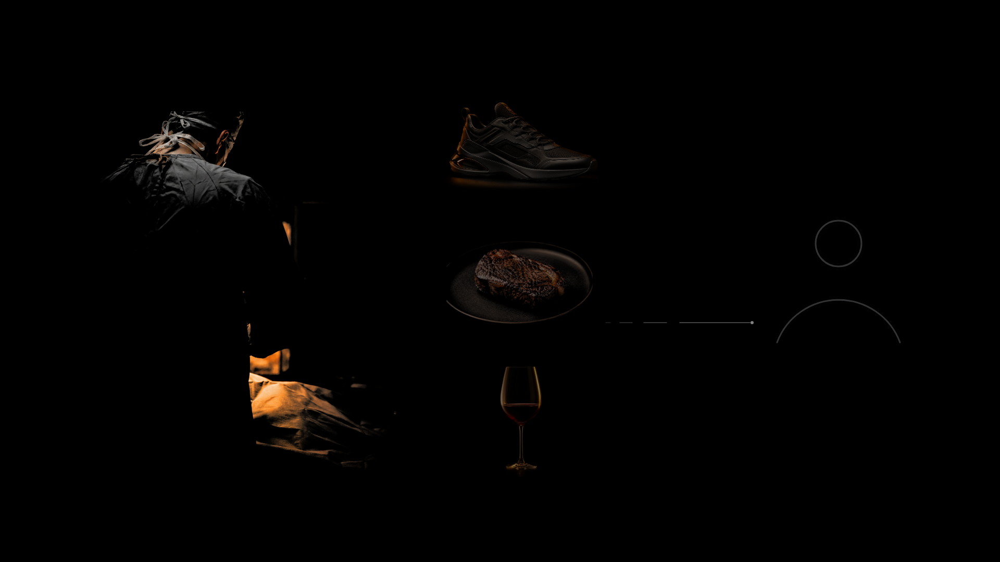
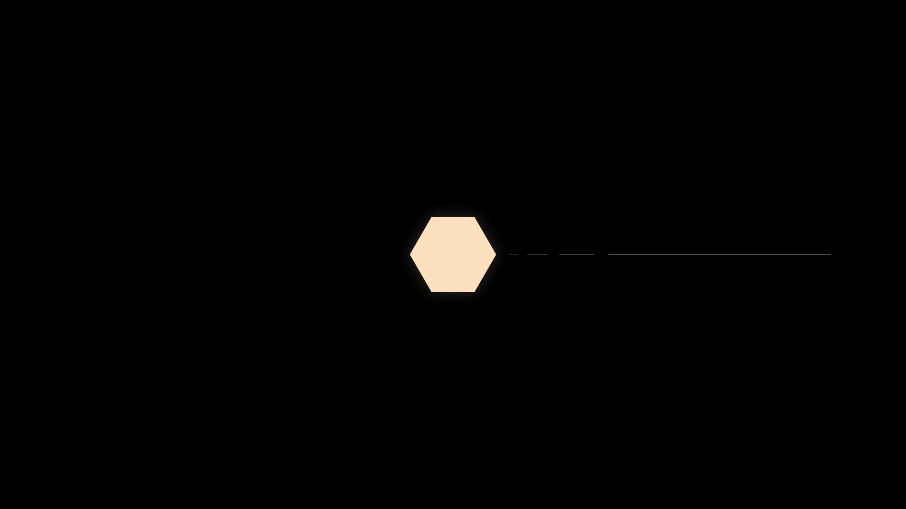
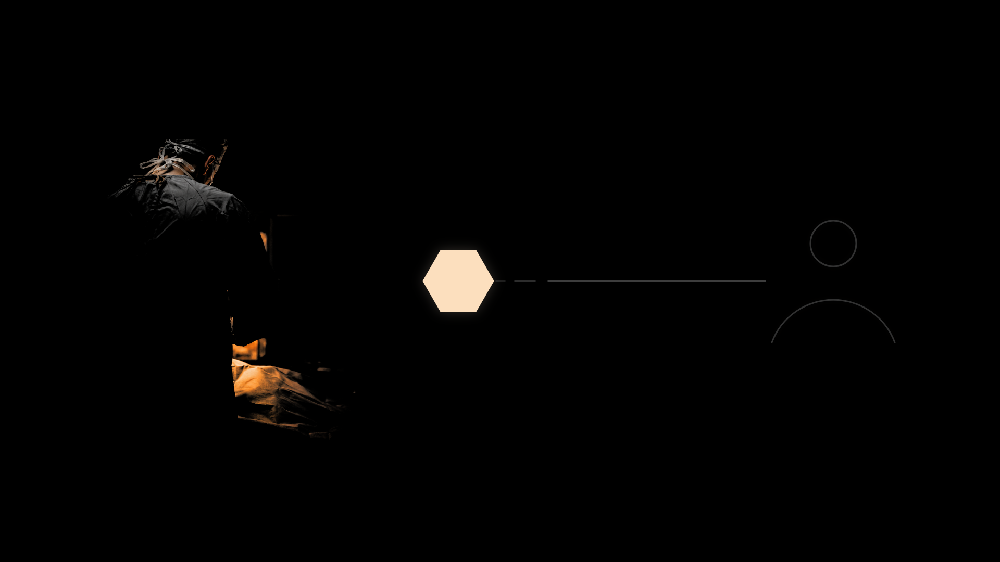
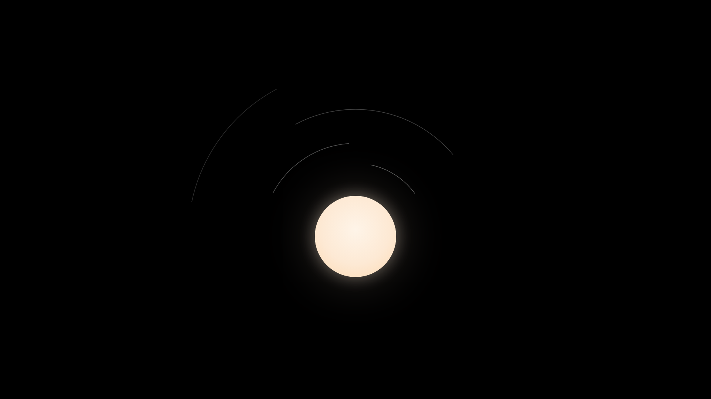
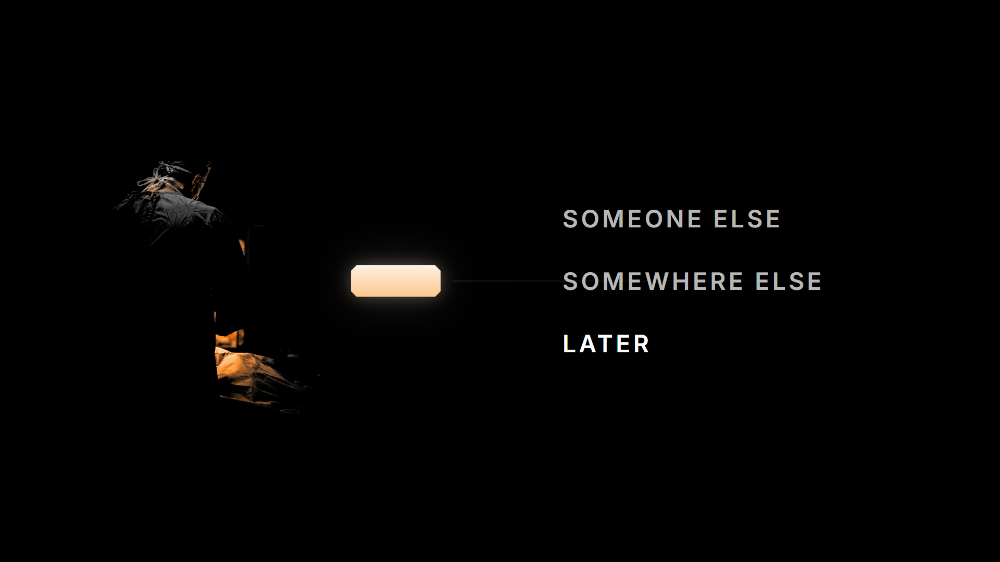
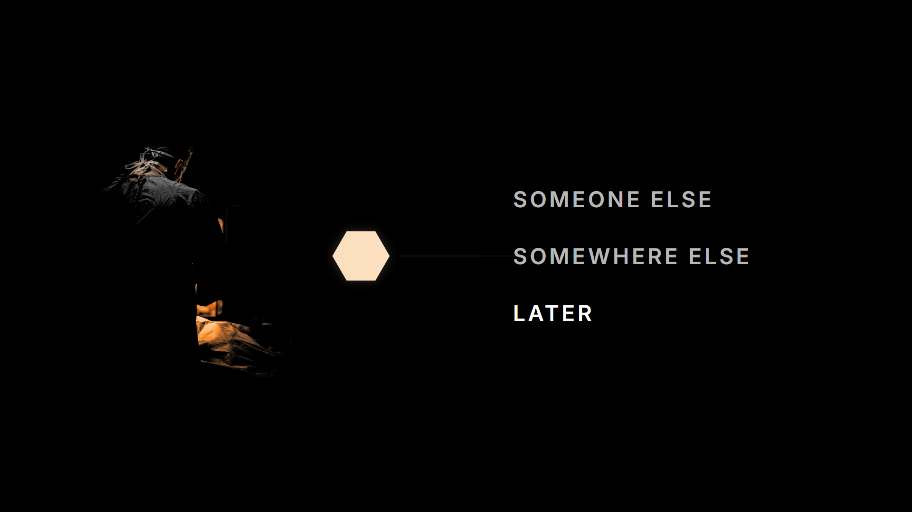
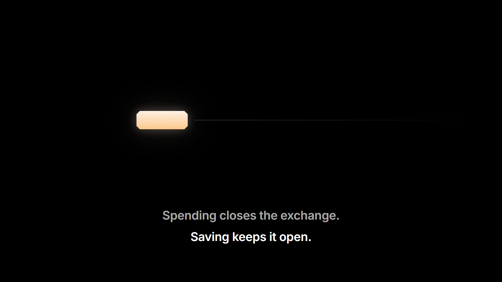

Every frame 1920×1080, real assets through the dark-field register, real type, brightness rules applied. Frames containing the Claim Mark render in all three Gate 1 candidates; S3-F1 in three compositional attempts. The presenter marks up this sheet; frames iterate as stills until approved; nothing animates before that.
Prologue
P1-F1 — the completed hours field · counter at 80,000 · the hours lineP1-F2 — mid-morph: the GOLD form · display scale, centered lowP1-F3 — the title frame (the thumbnail candidate)P2-F1 — the mercy line, alone

P2-F1 — the mercy line over the hours-field ghost (0.14)
Scene 2 — the direct exchange

S2-F1 — the exchange stage · photographic patient (render HELD at the gate)

S2-F1 — the exchange stage · restrained patient mark

S2-F2 — the failure state: dim possibilities, the return path failing
Scene 3 — the breakthrough (the signature image, 3 attempts × 3 candidates)
S3-F1 — the birth · attempt 1, the centered contraction · candidate AS3-F1 — the birth · attempt 1, the centered contraction · candidate B

S3-F1 — the birth · attempt 1, the centered contraction · candidate CS3-F1 — the birth · attempt 2, in the scene · candidate AS3-F1 — the birth · attempt 2, in the scene · candidate B

S3-F1 — the birth · attempt 2, in the scene · candidate C

S3-F1 — the birth · attempt 3, display low center · candidate AS3-F1 — the birth · attempt 3, display low center · candidate BS3-F1 — the birth · attempt 3, display low center · candidate C
Scene 3 — the open interval
S3-F2 — the open interval · candidate A

S3-F2 — the open interval · candidate B

S3-F2 — the open interval · candidate C
Scene 4 — spend or save
S4-F1 — SPEND resolution: goods arrived, claim absent, closure legibleS4-F2 — SAVE final · candidate A

S4-F2 — SAVE final · candidate BS4-F2 — SAVE final · candidate C